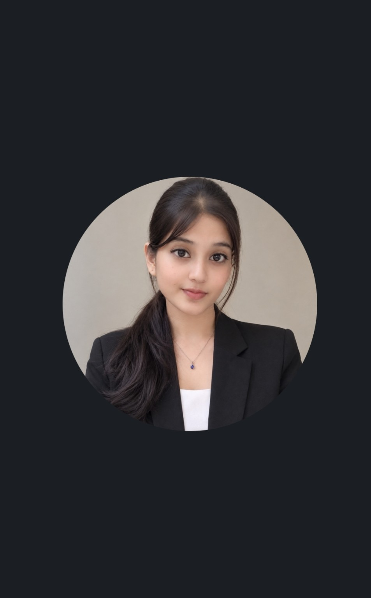
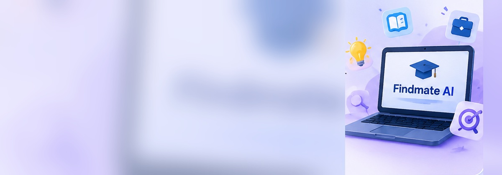
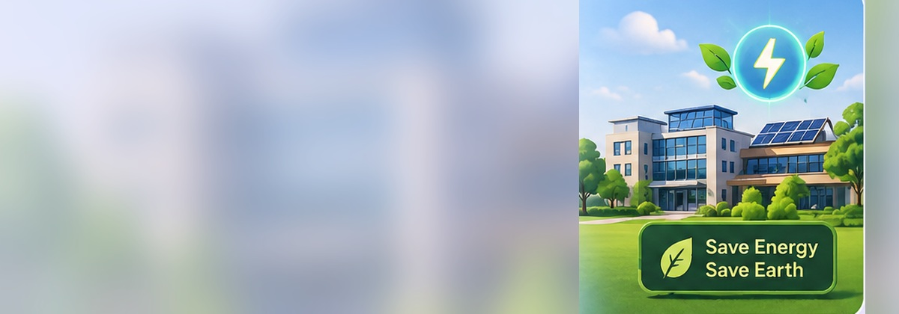

CERTIFICATE / 01
NPTEL Elite Certificate
Introduction to Industry 4.0 and Industrial Internet of Things
IIT Kharagpur · Jul–Oct 2026HELLO, WORLD. I'M
An AI & Data Science student with a curious mind, a builder's spirit, and a passion for what technology can make possible.

PRESS PLAY. GET TO KNOW ME.
A short introduction from my digital corner of the internet. Choose a voice and let me introduce myself.
The browser uses voices installed on your device. A female-sounding English voice is preferred when one is available.
I'm Booba Siri, a second-year B.Tech student in Artificial Intelligence and Data Science at Velalar College of Engineering and Technology.
I'm building my foundations in programming, exploring AI, and learning by creating. I enjoy turning ideas into projects, asking questions, and growing a little more confident with every challenge.
A visual map of the technologies and concepts I'm exploring. Filter a learning path, search a topic, or tap a card to see what I'm working towards.
I'm a student in progress — these are learning goals, not completed certifications or expert-level claims.
HELLO, WORLD. I'M
An AI & Data Science student with a curious mind, a builder's spirit, and a passion for what technology can make possible.

PRESS PLAY. GET TO KNOW ME.
A short introduction from my digital corner of the internet. Choose a voice and let me introduce myself.
The browser uses voices installed on your device. A female-sounding English voice is preferred when one is available.
✦
I'm Booba Siri, a second-year B.Tech student in Artificial Intelligence and Data Science at Velalar College of Engineering and Technology.
I'm building my foundations in programming, exploring AI, and learning by creating. I enjoy turning ideas into projects, asking questions, and growing a little more confident with every challenge.
A visual map of the technologies and concepts I'm exploring. Filter a learning path, search a topic, or tap a card to see what I'm working towards.
I'm a student in progress — these are learning goals, not completed certifications or expert-level claims.
Strengthening coding basics, logic and beginner problem-solving.
LEARNING ＋Next step: build confidence through small coding exercises.
Building familiarity with Java syntax and object-oriented concepts.
LEARNING ＋Next step: practise complete programs and test cases.
Exploring the structure and semantic building blocks of web pages.
EXPLORING ＋Next step: understand how accessible pages are structured.
Discovering layouts, responsive design, colours and visual styling.
EXPLORING ＋Next step: practise responsive layouts and reusable styles.
Exploring the language behind interactive web experiences.
EXPLORING ＋Next step: make simple web pages respond to user actions.
Exploring AI concepts and how intelligent applications are designed.
EXPLORING ＋Next step: connect concepts with beginner-friendly projects.
Getting familiar with how models learn patterns from data.
EXPLORING ＋Next step: strengthen maths and data foundations before deeper practice.
Exploring tools and systems that can generate text and other content.
EXPLORING ＋Next step: learn how to use generative tools thoughtfully.
Beginning to understand large language models and their applications.
NEXT TO LEARN ＋A future focus after strengthening programming and AI basics.
A future learning goal: connecting language models with trusted information.
NEXT TO LEARN ＋I'll explore this after understanding LLM fundamentals.
Learning how to organise, query and work with structured data.
LEARNING ＋Next step: practise queries with sample databases.
Revisiting the basics of Python libraries used for data work.
BASIC FAMILIARITY · LEARNING ＋Next step: practise small data-cleaning exercises.
Exploring the process of finding useful patterns and insights in data.
EXPLORING ＋Next step: strengthen statistics and Python data skills.
Learning version control and how to manage project code.
LEARNING ＋Next step: keep project work organised in repositories.
Exploring useful AI tools for learning, research and project ideas.
EXPLORING ＋Next step: evaluate tools and use them responsibly.
Using a code editor while learning to build and test projects.
LEARNING ＋Next step: get comfortable with an efficient coding workflow.
Practising quantitative aptitude, logical reasoning and problem-solving patterns.
LEARNING ＋Next step: keep a small daily practice routine alongside coding.
A planned next stage after building stronger programming confidence.
NEXT TO LEARN ＋I'll build up gradually, one concept at a time.
Try another keyword or choose a different path.
Always learning, never pretending. Every card is marked as learning, exploring or a future learning goal. Nothing here is presented as completed or mastered — I'll update this space as I progress.
Projects and collaborative experiences that are part of my learning story. Open a card to read more.

An early project that helped me explore building a technology-based solution for students.
VIEW OVERVIEW ↗My learning: Exploring how an AI-powered idea can be shaped into a student-facing project.
AI PROJECTLEARNING BUILDA student career guidance platform concept, designed to support learners across their journey.
VIEW OVERVIEW ↗Focus: Helping students explore career paths, skills, projects, internships and placement preparation.
EDTECHCAREER GUIDANCEAn agriculture-focused AI project exploring accessible support for farming-related questions.
VIEW OVERVIEW ↗Focus: Exploring a conversational software experience for agriculture-related information.
AGRI-TECHCHATBOT CONCEPT
A concept focused on identifying and reducing unnecessary energy usage in campus spaces.
VIEW OVERVIEW ↗Focus: Thinking about how technology can help make campus energy use more efficient.
SMART CAMPUSSUSTAINABILITYGitHub and live-demo links can be added when the project repositories are ready. No placeholder links are presented as working demos.
A collection of courses, workshops, hackathons and paper presentations. Select any certificate to view it clearly.
Introduction to Industry 4.0 and Industrial Internet of Things
IIT Kharagpur · Jul–Oct 2026SWAYAM Plus / Spoken Tutorial
EduPyramids · SINE, IIT Bombay · 22 Oct 2026Certificate of Appreciation
Yi-YUVA.ACM Student Chapter · 2026Deploying LLMs and Agents On-Prem
Nunnari Academy · 2026National Level Technical Symposium
Kongu Engineering College · 19 Sep 2026The Physics of Human Body
Velalar College of Engineering and Technology · 12 Feb 2026Science Club – PHENMACH
VCET · 29 Oct–1 Nov 2025Science Club – PHENMACH
VCET · 29 Oct–1 Nov 2025New certificates can be added by placing the image in the assets folder and adding a matching card in this section.
Every skill starts somewhere. I'm giving myself room to learn, practise, experiment and improve.
Strengthening programming, logic and core computer science concepts.
PYTHON · JAVA · APTITUDELearning through projects, workshops, hackathons and teamwork.
PROJECTS · COLLABORATIONGrowing in AI, data, problem-solving and real-world applications.
SQL · LLMs · RAGCurrently writing this chapter: second-year AI & Data Science student, learning one step at a time.
Always open to learning, collaboration and conversations with curious minds.
Strengthening coding basics, logic and beginner problem-solving.
LEARNING ＋Next step: build confidence through small coding exercises.
Building familiarity with Java syntax and object-oriented concepts.
LEARNING ＋Next step: practise complete programs and test cases.
A future learning area for strengthening programming fundamentals.
NEXT TO LEARN ＋A future addition to my programming foundations.
Exploring the structure and semantic building blocks of web pages.
EXPLORING ＋Next step: understand how accessible pages are structured.
Discovering layouts, responsive design, colours and visual styling.
EXPLORING ＋Next step: practise responsive layouts and reusable styles.
Exploring the language behind interactive web experiences.
EXPLORING ＋Next step: make simple web pages respond to user actions.
Exploring AI concepts and how intelligent applications are designed.
EXPLORING ＋Next step: connect concepts with beginner-friendly projects.
Getting familiar with how models learn patterns from data.
EXPLORING ＋Next step: strengthen maths and data foundations before deeper practice.
Exploring tools and systems that can generate text and other content.
EXPLORING ＋Next step: learn how to use generative tools thoughtfully.
Beginning to understand large language models and their applications.
NEXT TO LEARN ＋A future focus after strengthening programming and AI basics.
A future learning goal: connecting language models with trusted information.
NEXT TO LEARN ＋I'll explore this after understanding LLM fundamentals.
Learning how to organise, query and work with structured data.
LEARNING ＋Next step: practise queries with sample databases.
Revisiting the basics of Python libraries used for data work.
BASIC FAMILIARITY · LEARNING ＋Next step: practise small data-cleaning exercises.
Exploring the process of finding useful patterns and insights in data.
EXPLORING ＋Next step: strengthen statistics and Python data skills.
Learning version control and how to manage project code.
LEARNING ＋Next step: keep project work organised in repositories.
Exploring useful AI tools for learning, research and project ideas.
EXPLORING ＋Next step: evaluate tools and use them responsibly.
Using a code editor while learning to build and test projects.
LEARNING ＋Next step: get comfortable with an efficient coding workflow.
Practising quantitative aptitude, logical reasoning and problem-solving patterns.
LEARNING ＋Next step: keep a small daily practice routine alongside coding.
A planned next stage after building stronger programming confidence.
NEXT TO LEARN ＋I'll build up gradually, one concept at a time.
Try another keyword or choose a different path.
Always learning, never pretending. Every card is marked as learning, exploring or a future learning goal. Nothing here is presented as completed or mastered — I'll update this space as I progress.
Projects and collaborative experiences that are part of my learning story. Open a card to read more.
An early project that helped me explore building a technology-based solution for students.
VIEW OVERVIEW ↗My learning: Exploring how an AI-powered idea can be shaped into a student-facing project.
AI PROJECT LEARNING BUILDA student career guidance platform concept, designed to support learners across their journey.
VIEW OVERVIEW ↗Focus: Helping students explore career paths, skills, projects, internships and placement preparation.
EDTECH CAREER GUIDANCEAn agriculture-focused AI project exploring accessible support for farming-related questions.
VIEW OVERVIEW ↗Focus: Exploring a conversational software experience for agriculture-related information.
AGRI-TECH CHATBOT CONCEPTA concept focused on identifying and reducing unnecessary energy usage in campus spaces.
VIEW OVERVIEW ↗Focus: Thinking about how technology can help make campus energy use more efficient.
SMART CAMPUS SUSTAINABILITYGitHub and live-demo links can be added when the project repositories are ready. No placeholder links are presented as working demos.
Every skill starts somewhere. I'm giving myself room to learn, practise, experiment and improve.
Strengthening programming, logic and core computer science concepts.
PYTHON · JAVA · APTITUDELearning through projects, workshops, hackathons and teamwork.
PROJECTS · COLLABORATIONGrowing in AI, data, problem-solving and real-world applications.
SQL · LLMs · RAGCurrently writing this chapter: second-year AI & Data Science student, learning one step at a time.
Always open to learning, collaboration and conversations with curious minds.